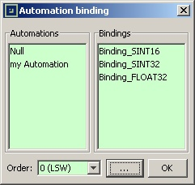

Bindbutton.

A binding is what glues an automation and a register/coil together.
Bindings have to be created in order to use automations in the MODBUS slaves of the project. A binding is an association between a register/coil and an automation.
The data stored in a real-world MODBUS slave is very often formatted as a combination of bytes/words in order to fit into the 16-bit registers. For example, a value may be stored internally as 32-bits signed integer, with the most significant word (MSW) in one 16-bit register and the least significant word (LSW) in another one.
The goal of bindings is precisely to create such mappings between the output value of the automations and the registers/coils of the MODBUS slaves.
The bindings are created by selecting the registers and coils
directly in the dialog of a MODBUS slave and then clicking on the Bind
button.
A new dialog appears. This is the binding editor, in which the user selects which automation should be associated with the selected register/coil, and what mapping to use. 
For some mappings, the value will span several registers and coils. In
that case, the user must specify the order
of the binding being
created.
For example, an automation value using the SINT32 mapping will span 2 registers. The user creates two distinct bindings:
Most Significant Word).
Least Significant Word).
Hold the CTRL key of the keyboard and select the lines
corresponding to the registers/coils to bind and click on the Bind
button.
When the binding editor appears, the Order
selection is
disabled. The order is automatically set starting from 0 for the first
selected line, and then is increased by one for the following lines.
For example, if three registers are selected, the first will get order=0, the second will get order=1 and the last will get order=2.
An existing binging can be easily modified by selecting the
corresponding line and clicking on the Binding
button. Then,
a new selection can be made, and applied by pressing the OK
button.
Changing a binding works with single or multiple line selection.
To remove one or several bindings, select the appropriate
registers/coils and then click on the Unbind
button.
ModbusPal comes with a few built-in bindings. They will suffice most of the time. Otherwise, it is possible to make custom bindings thanks to Python scripts.
The automation's value is formatted as a 16-bit signed integer value. It fits perfectly into a register, so there is no need to select an order.
The automation’s value is formatted as a 32-bit signed integer value. The least significant 16-bit word (LSW) is obtained with order=0. The most significant 16-bit word is obtained with order=1.
The automation’s value is formatted as a 32-bit IEEE floating point number. The least significant 16-bit word (LSW) is obtained with order=0. The most significant 16-bit word is obtained with order=1.
For special cases, it is always possible to define a custom binding class thanks to the Python script support. Information on how to write scripted bindings is available in this page.
When the users write their own binding scripts, in some cases they will figure out that the binding could directly generate the values they are supposed to format. It is not always necessary to have a seperate automation for that.
Still, ModbusPal requires that a binding is associated with an automation. This is when the Null automation comes in handy.
The Null automation is always available, even when the project does not define any automation. And it does nothing. So if the custom binding generates the values by itself, the user can use the Null automation to make it work.